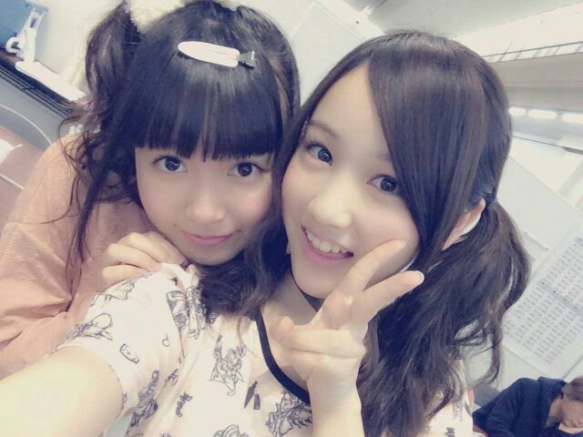

| 2014/04 09 Wed | ひめたん(*>ω<*)そ の431 |
乃木どこ収録してきました＼(^o^)／
それからヤンジャンさんの撮影に
参加させていただきました＼(^o^)／
どっちも情報解禁なったら
告知するのでよろしくねー
ちょっと待っててくださいな♪

いやーかわいいー(ノ)ω(ヾ)

さて、さてさて
5/3・5/17のアンダーライブ
まだ空きがあるみたいなので(´；；｀)
追加応募できるようにしてもらいます！
みんなでリハがんばってるから
ぜひ遊びに来てほしいなー(´；；｀)
待ってますよー♪
そして
昨年発売したトレカの
第2段が発売決定しました！
年明けくらいに言ってた
いつかお知らせするねーってのはこのこと。
詳しくは公式サイトに飛んでね♪

ねねころ (伊藤寧々ちゃん)の日記に
ひめたんがオールバックだったって書いてあって
みなさんいいなーなんて言ってたけど
もうね断言します
みなさんには絶っっっ対に見せない( ´_ゝ`)
とゆーか見せらんない♪んふ
ねねころーいーもん見たねー
貴重だよオールバックひめたん♪♪
あっなんてゆーか
なんだろ今日の質問返しのクオリティ。
別に疲れてないからね(笑)

 ひめたんすきです。
ひめたんすきです。
でも残り携帯の充電が8%です。どうしましょう。
ひめたんビームで回復出来ますか？？
無理でーすさよなら／(^o^)＼
ついんてって巻くのとストレート
どっちが良いと思うー？www
それぞれの良さがあると思うよー♪♪
ひめたんは巻き率高いです。
ツインテールでくるくるにしてる時は、
巻いてからしばってるの？
しばってから巻いてるのー？？
大抵は結んでから巻くんじゃないかな。
メイクさんは輪っかになってない状態の
髪ゴムを使ってらっしゃるので
巻いてから結んでも形は崩れないのですが
ひめたんが個人的にやる時は
結んでから巻かないと巻きがとれちゃうの。
 私の姉がひめたんにめろめろです。
私の姉がひめたんにめろめろです。
どうしたらいいですか？
あわよくばあなたもひめたんにめろめろ......
おねーさんよろしくね∩^^∩笑
おねーさんだいすきよー♪♪
ひめたんの質問コーナーに
質問が選ばれる確率と
サマージャンボ宝くじが当たる確率は
どちらが高いですか？
言うまでもなく
ひめたんの質問コーナーかと。
DVDのパッケージ開けたら
違うディスクが入ってたってことない？
私これよくやっちゃう...
あーありますね、もうねいつもそう。
でもそれって結構真面目に
困るんだよね(´・ω・｀)
いやーめんどくさがりってどうしてこうも
余計な作業を生むのが得意なんだろうねー
 ひめたんは親友が落ち込んでたら
ひめたんは親友が落ち込んでたら
かけよってすぐに声をかけるタイプか？
涙の理由をきかず見守るタイプ？
後者かな。
ひめたんは、親友には
そうであってほしいなと思うから。
ひめたんに勇気づけてもらいたいです。(中略)
ひめたん何かお言葉をお願いします
本文伏せて書くけどちゃんと届くかな？
うーんそうだな、自分が望むなら
ちょっとずつでも行動にうつしてみたほうが
あとで後悔することないんじゃないかな。
もちろん、難しいことだと思うし
自分にしかわからない辛さとかあると思うのね
でも、一歩踏み出そうとしてるしてる自分を
大切にしてほしいの(＊^^＊)
変わろうって思えたんだからすでに
かつての自分より何倍も前向きなんだよねきっと。
時間はいくらだってかけてもいいんだから
少しずつ少しずつやってみよう！
相談してくれてありがとう＊
応援してます、ひめたんもがんばるね。
ひめたんの日記の
コメント欄下２ケタに46を踏んだ方へ
手書きでコメ返するコーナー
＼ ひめたん46 ／

印刷のミスで
紙がちょっとあれです
ごめんね(´・ω・｀)
いつもコメントたくさん
ありがとうございます
運営さんブログの「誰か」は
かなりんだよー＼(^o^)／
かなりんほんと髪伸びたねー
まりか？って解答が多かったでーす
あっそうそうなんかねコメント読んでるとね
みなさんの質問のクオリティが高すぎて
ひめたんに何を聞いたら採用されるか
わかりませーん＼(^o^)／
って声が非常に多くて。
いやーほんとにね
ひめたんもコメント読んでて
ここは天才の集まりですかってたまに思うけど
そんなに気負わないで
何でも気になったこと質問してくださいな(＊^^＊)
気軽に思ったこと書いて
1対1じゃなくてみんなと気持ちを共有できる
そんな場になれたら嬉しいなー
毎回楽しみに読んでるよー♪♪
(＊´・ω・＊)
コメント(447)
2014/04/09 23:48